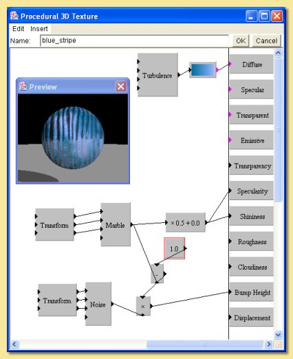

|  |
This texture is based on the marble module. This is stretched into a ragged stripe pattern by applying
a linear transform (x:2, y:0.1, x:1). The output is scaled and fed into the specularity property causing
the stripes to be shiny and the background not. Small scale bumps are then added only to the not-reflective stripes. The non-reflective stripes are selected by subtracting the marble pattern from 1; this effectively inverses the pattern so that the 1s becomes 0s and vice versa. This is multiplied by the noise pattern used for the bumps so that the bump height is 0 for the reflective stripes. Finally, a diffuse colour map is created based on the turbulence pattern. |